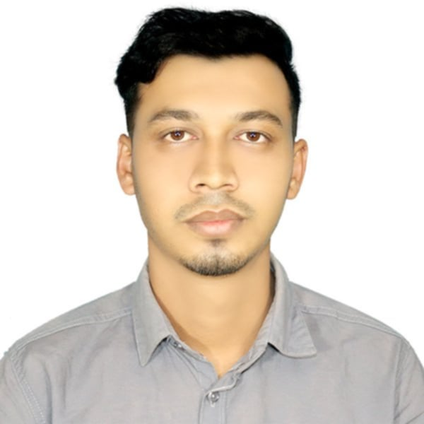

Syed Dider Hossain
Cumilla,Chittagong,Bangladesh
Education
- Graduated in Social Work - 2022
- H.S.C. from Cantonment College - 2017
- S.S.C. from Rampur School - 2015
Experience
- Internship at Page Development (Microfinance) - 2023 to 2024
Assisted with financial data management, client communications, and field-level research. Contributed to organizing workshops and awareness sessions focused on rural economic empowerment.
Professional Orientation
- Strong understanding of community development and microfinance operations.
- Interested in NGO work and rural development initiatives.
- Capable of working in both team settings and independently in field-level projects.
- Passionate about helping underprivileged communities through social work.
Skills
- Microsoft Word
- Microsoft Excel
- Microsoft PowerPoint